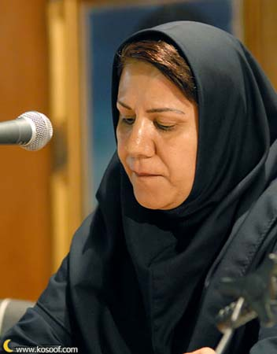

پذيرش > تریبون > مقالات > رابطه کمپین با سایر جنبشهای اجتماعی به ویژه جنبش کارگری


 رابطه کمپین با سایر جنبشهای اجتماعی به ویژه جنبش کارگری رابطه کمپین با سایر جنبشهای اجتماعی به ویژه جنبش کارگری
8 تیر 1386 - شهلا انتصاری - نسخه قابل چاپ
کمپین یکی از نشانه های رشد جنبش اجتماعی ایران است . رشد یافتگی حرکت کمپین در وحدت طلبی ، رابطه مستقیم با توده های مردم ، استفاده از ابزارهای مدرن ارتباط جمعی و ایجاد اشکال نوین و خلاق سازماندهی و در اعتلای روحیه حق طلبی و اعتراضی است که تمام ویژگی ها و تجارب جنبشهای چندین ساله اخیر را در خود متبلور کرده است . گسترش کمپین در بین اقشار مختلف مردم ، خود معلول رشد یافتگی جنبش های اجتماعی سالهای اخیر است . و بصورت دیالکتیکی ، الهام بخش و رشد دهنده دیگر جنبش های اجتماعی شده است . ما زمزمه های تحسین و الهام پذیری را از زبان سخنگویان سایر جنبشها میشنویم .
شیوه جمع آوری امضاء در سالهای گذشته توسط بخش کارگری در جریان احیای سندیکای کارگران شرکت واحد اتوبوسرانی تهران و حومه تجربه موفقیت آمیزی داشته است . سندیکالیستها از ابتدای مسیر تا انتهای خط ، بشکل چهره به چهره امضا جمع می کردند و از آنجاییکه به آنها گفته شده بود طبق قانون در یک واحد صنفی تنها یک تشکل میتواند باشد ، و در زمانی که شورا هست سندیکا غیر قانونی است آنها مطرح می کردند اولا" از سال 1347 سندیکای ما تشکیل شده است و ثانیا" با روش مدنی واز طریق جمع آوری امضا در طومارهایی طولانی به روشی کاملا مدنی قانونمند و مسالمت آمیز و فراگیر توده ای ، نشان دادند که شورا مورد استقبال کارگران نیست و خواهان سندیکا هستند و اساسا ماهیت صنفی سندیکا با شورا که ماهیت غیر صنفی دارد متفاوت می باشد. با وجود دستگیری 700 نفر از کارگران و اخراج بیش از 50 نفر از آنان همچنان بر خواسته خود پای فشردند و همگی شاهد بودیم همسران این کارگران بودند که در غیاب آنان با جسارت و شهامت پیگیرِِِیِ مطالبات و مسئولیت خانواده راعهده دار بودند . وهمچنین به یاد داریم یکی از کارگران بعد از دستگیری همسر و فرزندانش خود را به پلیس معرفی مینماید همسرش به محض دیدن او در مقابل ماموران با اعتراض به همسرش می گوید چرا خودت را معرفی کردی ؟ اگر تو سندیکا را رها کنی ، من ادامه خواهم داد !.
کارگران با همدلی و همراهی صمیمانه از تجمع قانونی و مسالمت آمیز 22 خرداد 84 ، 85 و 8 مارس حمایت
کردند . و در تجمع قانونی 22 خرداد 1385 چند نفر از همسران آنان دستگیر شدند .
به عنوان نمونه دیگر می توان از حرکت رفراندوم نام برد که با استفاده از این جمله معروف آقای خمینی که مطرح می کردند "قانون اساسی برای نسل قدیم نوشته شده است نمی تواند برای نسلهای بعدی لزوما" مورد استفاده قرار گیرد و آنها حق دارند برای تهیه قانون اساسی جدید تلاش کنند" ، رفراندوم قانون اساسی را پیش کشیدند و حدود 40 هزار امضای اینترنتی جمع کردند . که در نوع خود با همه کاستی هایی که داشت ، کم نظیر بود .
خواسته معلمان نیز اگرچه در حال حاضر صد درصد صنفی است اما از بهترین نمونه های حرکت دموکراسی خواهانه است که توانست توده وسیع معلمان را حول خواسته های ملموس و واقعی جلب نماید . معلمانی که بنیادهای شخصیت فرزندانمان توسط زحمات شبانه روزی شان شکل می گیرد . می توانیم بگوییم هر کدام از ما به نوعی تحت تاثیر معلمان و مدرسان خود بوده ایم .
آنها برای تامین حداقل معیشت خود در مضیقه هستند و حرکت حق طلبانه آنها نیز سرنوشت کارگران را پیدا میکند که می بینیم چگونه ریشه های این خواسته ها که همانا خواسته های صنفی و طبقاتی است به هم گره می خورد .
در مورد ارتباط جنبش دانشجویی و کمپین دوست دانشجوی ما به طور مفصل توضیح دادند ، من در اینجا فقط اشاره می کنم که جنبش دانشجویی به علت ویژگیهایی که دارد بسرعت سیاسی می شود اما پایگاه طبقاتی دانشجو سیال است به دلیل همین سیال بودن است که در معرض تغییر قرار دارد و این خطر وجود دارد که در مقابل منافع توده زحمتکش قرار بگیرند ، که نیاز به توضیح بیشتری دارد و شاید از حوصله جمع خارج باشد .
حرکتهای برابری طلبانه زنان و سایر جنبشهای اجتماعی هرکدام یکی از اضلاع چند وجهی حرکتهای دموکراسی خواهانه هستند . که نیروهای طرفدار عدالت اجتماعی وظیفه دارند با تمام قوا و امکانات ، از آنها حمایت کنند . و برای تثبیت و تعمیق آن کوشش نمایند .
تثبیت و تعمیق دمکراسی عبارت است از تلاش برای گسترش آن در عرصه های مختلف رفاه اجتماعی و تامین حقوق زحمتکشان که این معنای درست رادیکالیسم است بر خلاف تعابیر نادرستی که رایج شده و برخی آن را با خشونت طلبی و افراط گرایی یکی می گیرند . تا با خلط مبحث با دمکراسی واقعی رقابت و مبارزه کنند و در چارچوب روابط ناسالم اقتصادی و رانت خواری به منافع نامشروع خود برسند .
در برخی نوشته های دوستانی که خود را مدافع زحمتکشان و عدالت اجتماعی میدانند و واقعا هم هستند ، شاهد دغدغه هایی هستیم مبنی بر اینکه گویا دفاع ما از کمپین باعث سردرگمی مردم و ارائه راه حل های ناکافی و ناقص می باشد و مردم را از رسیدن به سرمنزل مقصود باز می دارد .
حتی برخی از این دوستان با طرح سول هایی از قبیل اگر دولتمردان با چند مورد از خواسته از قبیل برابری دیه یا شهادت برابر مرد و زن و یا قصاص موافقت کردند آنوقت شما چه خواهید کرد ؟! یا اینکه می پرسند چرا شما در چارچوب حوزه علمیه و چارچوب های قانونی موحود تلاش می کنید ؟ و سوآلاتی از این قبیل ...
در پاسخ باید گفت نیروهای مترقی هیچ گاه به دست آوردهای کوچک دموکراتیک کم بها نمی دهند و آن را زمینه ای برای تلاش برای دستاورد های بعدی و خواسته های مهم تر می سازند همانطوری که کارگران اگر دستمزد یا امکان رفاهی بهتری بدست بیاورند رهبران کارگری از این دستاوردها استقبال می کنند و نگران نمی شوند !
از بحث زنان دور نشویم ! حال ببینیم شما چه جنبش اجتماعی ، سیاسی و فرهنگی را در سراسر جهان سراغ دارید که در آن زن حضور نداشته باشد ؟
پیوند جنبش زنان و سایر جنبشها از این واقعیت ساده و بدیهی ناشی می شود که زنان در تمام این جنبشها حضور فعال ، پیگیر و همراه داشته اند . بنابراین تلاش برای دمکراسی زن و مرد نمی شناسد .
ارسال به
بالاترین
،
توییتر
،
فریندفید
،
فیسبوک
در همين بخش :
 دهمین دورۀ مراسم تندیس صدیقه دولت آبادی ۱۳۹۲ دهمین دورۀ مراسم تندیس صدیقه دولت آبادی ۱۳۹۲
کارت پستالهایی به بهانهی هشت مارس و به یاد همهی مبارزین راه برابری
بیانیه بیش از 350 تن از مدافعان حقوق زنان به مناسبت روز جهانی زن؛ زنان هر روز فرودستتر میشوند
لباسی که برای تن ما دوخته اند! /اعظم بهرامی
چالشها و چشمانداز فعالیت مدنی زنان
ديگر بخش ها :
طرح یک میلیون امضا
|
مقالات
|
سایت نوشته ها
|
اخبار
|
گزارش كمپين
|
گفت و گو
|
علیه سکوت
|
كوچه به كوچه
|
نامه های شما
|
گزارش ویژه
|
گفتگو با اعضا
|
ویژه سالگرد کمپین
|
تصویر برابری
|
دل آرام علی
|
تریبون
|
مقالات
|
تاریخ شفاهی
|
خارج از چارچوب
|
کتابخانه
|
درباره کمپین
|
کمپین در شهرها
|
کمپین در بند
|
صدای تغییر
|
ویژه 22 خرداد
|
لایحه حمایت از خانواده
|
گالری
|
عشا مومنی
|
امیر یعقوبعلی
|
خدیجه مقدم
|
راحله عسگری زاده و نسیم خسروی
|
پروین اردلان،جلوه جواهری، مریم حسین خواه، ناهید کشاورز
|
زینب پیغمبرزاده
|
سعیده امین، سارا ایمانیان، محبوبه حسین زاده، ناهید کشاورز و همایون نامی
|
احترام شادفر
|
نسیم سرابندی زاده،فاطمه دهدشتی
|
وبلاگ مهمان
|
پرونده خرم آباد
|
دستگیری ها
|
مریم مالک
|
پرستو اللهیاری
|
مهرنوش اعتمادی
|
سمیه رشیدی
|
Other Languages
|
همراهان
|
«فراخوان کمپین ده روز با بهاره هدایت»
| English
|